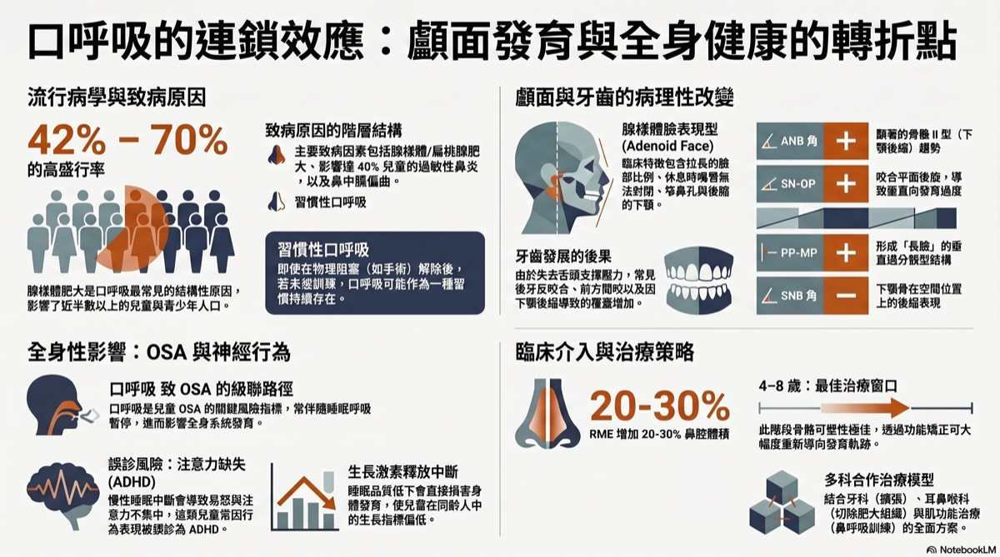
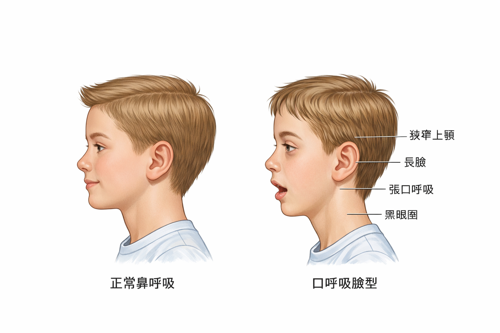
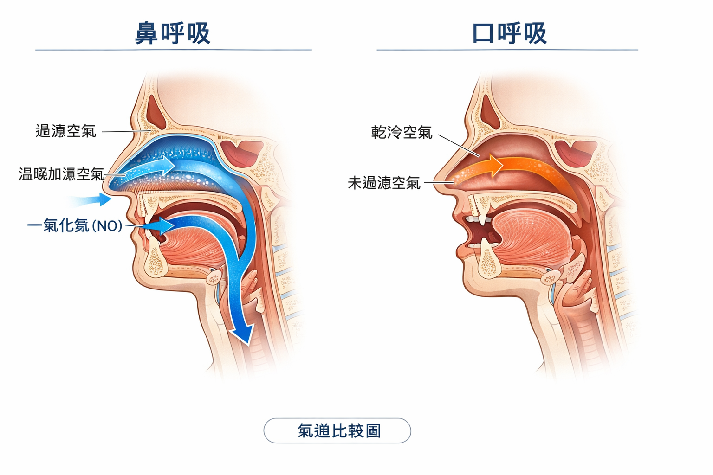

🎬 你有沒有見過這樣的孩子？
嘴巴總是微張著，連安靜坐著也是；臉看起來偏長、牙齒很擁擠、嘴唇乾裂；容易過敏、鼻塞、睡覺打鼾；在學校注意力不集中，有時還被說可能是過動。
這些症狀，可能都來自同一個你沒想到的原因：孩子一直用嘴巴在呼吸。
🎙 NotebookLM 學習資源 NEW
AI 生成：音頻導覽 × 投影片 × 資訊圖
本站所有文獻已匯入 NotebookLM，由 AI 自動生成多媒體學習資源，適合不同學習方式的讀者。

▲ NotebookLM 生成資訊圖｜口呼吸的發育與健康影響
🎧 音頻導覽（中文）
張口呼吸竟會變醜又過動
口呼吸如何毀掉臉型
口呼吸讓小孩變醜甚至誤診過動
口呼吸正悄悄毀掉你的臉型
共 6+ 份音頻，可在研究文件頁下載
口呼吸如何毀掉臉型
口呼吸讓小孩變醜甚至誤診過動
口呼吸正悄悄毀掉你的臉型
共 6+ 份音頻，可在研究文件頁下載
📊 AI 投影片（英中雙語）
Craniofacial Architecture of Mouth Breathing
Mouth Breathing Systemic Cascade
完整 PDF 可至研究文件頁下載
Mouth Breathing Systemic Cascade
完整 PDF 可至研究文件頁下載
🎥 相關學術簡報
本主題的學術簡報
以下簡報由趙哲暘醫師整理，資料來源為同儕審查學術文獻，歡迎線上觀看或分享。
🎨 AI 視覺圖卡
圖解：鼻呼吸 vs 口呼吸的真正差別
以下圖卡由 AI 根據學術文獻自動繪製，用視覺化方式呈現口呼吸對身體的影響。
👃
口呼吸視覺說明圖卡
4 張 AI 插圖圖卡 · 鼻呼吸 vs 口呼吸全比較 · 中文版
點擊開啟圖卡 →
▲ 點擊開啟 Gamma 互動圖卡 ｜ 資料來源：學術文獻整理，趙哲暘醫師審訂
🖼 醫學解說圖
口呼吸：視覺化關鍵說明
以下解說圖由 GPT Image 1.5 依據學術文獻繪製，呈現口呼吸對臉型與氣道的影響。


圖像由 GPT Image 1.5 生成 ｜ 趙哲暘醫師審訂 ｜ 資料來源：同儕審查學術文獻
📖 基本觀念
口呼吸和鼻呼吸，差在哪？
鼻子是為呼吸設計的，嘴巴不是。這個差距，影響比你想的大。
| ✅ 鼻呼吸 | ❌ 口呼吸 |
|---|---|
| 過濾細菌、灰塵和過敏原 | 沒有過濾，直接吸入各種刺激物 |
| 加熱、加濕空氣 | 冷乾空氣直接進入，傷害氣管黏膜 |
| 產生一氧化氮（NO），幫助血管擴張和免疫 | 幾乎不產生 NO，免疫和血壓受影響 |
| 舌頭自然靠在上顎，提供發育支撐 | 舌頭低位，上顎失去支撐，發育變窄 |
| 嘴唇輕閉，口腔肌肉平衡 | 嘴唇開開，顏面肌肉失衡，臉型改變 |
🔍 原因
孩子為什麼會用嘴巴呼吸？
通常不是孩子「想這樣」——是有東西讓鼻子不通了：
腺樣體肥大
腺樣體（adenoid）位於鼻腔後方，肥大時直接堵住鼻後通道。研究顯示 42–70% 的兒童口呼吸與腺樣體肥大有關（Ma et al. 2024）。
過敏性鼻炎
台灣兒童過敏性鼻炎盛行率約 40–50%，鼻腔長期腫脹，讓孩子被迫改用嘴巴呼吸。
上顎狹窄
上顎太窄 → 鼻腔底部受壓 → 鼻腔容積變小 → 鼻塞 → 更多口呼吸。這是一個互相惡化的循環。
舌繫帶沾黏
舌頭太短，無法自然頂住上顎，舌頭低位 → 上顎失去支撐 → 嘴巴容易打開 → 口呼吸。
⚠️ 後果
口呼吸怎麼改變孩子的臉型？
骨骼發育是順著力量走的。嘴巴持續張開，意味著整個顏面的力學環境都變了：
起點
鼻塞 / 腺樣體肥大
鼻腔通道受阻，孩子被迫改用嘴巴呼吸
↓
1
嘴巴持續張開，舌頭低位
舌頭不再貼著上顎，失去對上顎的「內側撐開力」
↓
2
上顎發育變窄、變高（高拱形上顎）
臉也隨之變長、變窄——這就是「腺樣體臉（adenoid face）」
↓
3
牙齒擁擠、咬合不正、下巴後縮
上顎太窄，牙齒沒有足夠空間排列；下顎跟著後退，外型改變
↓
4
鼻腔底部受壓、鼻腔容積縮小
上顎窄了，鼻腔空間也跟著縮小，鼻塞更嚴重——惡性循環
↓
5
氣道縮小 → 睡眠呼吸中止症（OSA）
上顎窄、下巴後縮、舌頭大 → 睡眠時氣道容易塌陷
📐 頭顱 X 光（頭顱側位片）的研究數據（Zhao et al. 2021 meta-analysis）
- ANB 角增大（上顎相對下顎更前突）——典型的上顎外暴、下巴後縮形態
- 下顎平面角增大——臉型比例偏長，後臉高降低
- SNB 角減小——下顎相對於顱底更後縮
🧠 你可能沒想到的影響
口呼吸還會影響大腦和行為
😴 睡眠品質差
口呼吸的孩子睡覺更淺、更容易打鼾，睡眠品質不好 → 白天疲憊、注意力不集中。
📚 被誤診為 ADHD
睡眠不足導致的注意力問題、衝動控制差，與 ADHD 症狀高度重疊，孩子可能被誤診而未針對睡眠問題處理。
📈 生長激素受影響
生長激素主要在深度睡眠時分泌。口呼吸 → 睡眠品質差 → 深度睡眠減少 → 生長發育可能受影響。
🦷 口腔問題
口腔長期乾燥 → 唾液保護減少 → 蛀牙風險增加；加上逆吞嚥、牙齒擁擠，齒科問題成串出現。
⏰ 時機很重要
幾歲介入最有效？
🌟 黃金治療期：4–8 歲
這個年齡段的顎骨骨縫尚未癒合，對矯正力的反應最靈敏，治療效果最好。
研究顯示，快速上顎擴展（RME）可以使鼻腔氣道容積增加 20–30%，同時改善口呼吸和打鼾。
8–12 歲還能做中等效果的介入；成人也有治療選項，只是療程相對複雜，效果也較難達到兒童期的程度。
| 年齡 | 骨骼可塑性 | 介入效果 | 建議做什麼 |
|---|---|---|---|
| 4–8 歲 | 最高（骨縫未癒合） | 最好 | RME 擴弓、處理腺樣體、OMT、鼻過敏治療 |
| 8–12 歲 | 中等 | 良好 | 功能性矯正器、OMT、繼續監控 |
| 12–18 歲 | 降低（縫開始癒合） | 有限 | 骨錨式擴弓、矯正、OMT |
| 成人 | 低（骨縫癒合） | 需要手術輔助 | 手術輔助擴弓（SARPE）、OSA 評估、OMT |
三句話總結
- 口呼吸不是壞習慣，通常是有原因的——鼻塞、腺樣體肥大、過敏是最常見的根源，需要找到並解決。
- 孩子的臉型是可以被口呼吸改變的：上顎變窄、臉變長、氣道縮小——這些在發育期會「成型」，越晚處理越難逆轉。
- 4–8 歲是黃金治療期，快速上顎擴展（RME）配合 OMT，可以同時改善臉型、氣道和呼吸習慣。
「孩子的臉型是被口呼吸改變的——
但如果早點發現，它也可以被改變回來。」
但如果早點發現，它也可以被改變回來。」
── 口呼吸顱面發育研究摘要（Zhao et al. 2021 meta-analysis）
🧪 快速測試
孩子（或你自己）有口呼吸嗎？
以下問題適合觀察孩子，也適合自我評估。
📝 觀察 8 個特徵
1. 平靜時嘴巴是微開的（不是在說話或運動時）
2. 睡覺時張嘴，或枕頭上有口水痕跡
3. 有打鼾或睡覺呼吸聲很大
4. 臉型偏長，嘴唇乾裂或經常張開
5. 常常鼻塞，特別是早晨或季節交替時
6. 白天注意力不集中、容易疲憊或情緒起伏大
7. 牙齒擁擠，或曾被牙醫說上顎偏窄
8. 曾被耳鼻喉科說腺樣體或扁桃腺偏大
❓ 常見疑問
關於口呼吸的疑問
只是用嘴巴呼吸而已，有那麼嚴重嗎？+
在發育期（尤其 12 歲以前），持續的口呼吸對骨骼發育的影響是真實而累積的。上顎的發育方向、臉型比例、鼻腔空間，都受到舌頭位置和呼吸方式的影響。一旦骨骼定型，要改變就需要手術輔助，費時費錢。早期發現的代價遠低於成年後的矯正治療。
要怎麼讓孩子改成鼻呼吸？+
首先要找出鼻塞的原因並處理：過敏性鼻炎用抗過敏治療，腺樣體肥大評估是否需要手術。在口腔端，口顎肌功能治療（OMT）訓練舌頭靠上顎、嘴唇閉合、鼻呼吸的習慣。上顎擴展（RME）可以物理性地增大鼻腔容積。通常需要多科合作。
用嘴巴貼（tape）的方式有用嗎？+
嘴巴貼（mouth taping）在某些成人睡眠研究中顯示有助於促進鼻呼吸，改善輕度打鼾。但它是「症狀管理」，不是根本治療——如果孩子有腺樣體問題或上顎太窄，強迫閉嘴而不解決根本原因，可能帶來其他問題。使用前請先諮詢醫師。
RME（快速上顎擴展）是什麼？需要做嗎？+
RME 是一種固定在上顎的矯正裝置，透過中間的螺絲每天旋轉，逐漸撐開上顎骨縫，讓上顎變寬。這個過程同時增大了鼻腔底部的空間，鼻腔容積可增加 20–30%。通常在 4–12 歲效果最好，因為這時骨縫還沒完全癒合。如果孩子有上顎窄 + 口呼吸問題，RME 是非常有效的第一步。
大人的口呼吸還能改善嗎？+
可以！成人的改善路徑包括：過敏治療、OMT 訓練、針對 OSA 的治療（如 PAP）、必要時手術（如手術輔助快速上顎擴展 SARPE）。骨骼雖然不再成長，但軟組織、肌肉習慣和呼吸模式是可以訓練改變的。改善口呼吸後，睡眠品質、白天活力都可能明顯提升。
📚 學術實證
研究告訴我們什麼？
以下研究整理來自 Elicit 與 Consensus 學術資料庫查詢結果（2025 年 4 月），涵蓋系統性回顧、統合分析與大型世代研究。
主要研究發現
- 口呼吸導致可量化的骨骼改變。 Zhao 等人（2021，BMC Oral Health，統合分析 10 篇研究）發現，口呼吸兒童的上下顎骨均顯著向後下方旋轉（p<0.0001），咬合平面傾斜加大，上門牙向唇側傾斜，並普遍伴隨咽部氣道狹窄。
- 上顎弓狹窄、後牙錯咬合、第二類錯咬合是最一致的牙科表徵。 Harari 等人（2010，The Laryngoscope，n=116）發現口呼吸組後牙錯咬合盛行率達 49%，顯著高於鼻呼吸組的 26%（p=.006）。多篇系統性回顧一致指出上顎弓狹窄與覆蓋過大。
- 腺樣體肥大是最主要的致病原因，形成惡性循環。 Zhang 等人（2024，Frontiers in Public Health）彙整 20 年文獻，指出氣道阻塞 → 口呼吸 → 口周肌失衡 → 骨骼錯咬合 → 氣道更窄，三者互相強化，稱為「腺樣體面容惡性循環」。
- 影響具年齡依賴性，早期介入效果更好。 Mattar 等人（2011）追蹤術後約 28 個月，發現 3–6 歲接受腺樣體切除術的兒童，下顎生長方向出現顯著正常化。骨骼可塑期（12 歲前）是介入的黃金時間。
- 口呼吸與睡眠障礙高度相關。 Primarti 等人（2025，n=343）發現口呼吸兒童罹患睡眠呼吸障礙（SDB）的風險高達 4.24 倍（95% CI: 2.70–6.65）。Izu 等人（2010）研究 248 名口呼吸兒童，42% 確診 OSAS，58% 為原發性打鼾。
研究限制
- 因果關係仍有爭議：部分研究認為原本顏面結構較窄的兒童更容易發展為口呼吸，而非反向。
- 研究設計異質性高，「口呼吸」的診斷標準不一（臨床觀察、家長問卷、多項睡眠生理檢查均有採用）。
- 多數研究為橫斷面或回溯性設計，長期追蹤資料不足，難以確認術後骨骼矯正效果的持久性。
主要參考文獻
- Zhao Z et al. (2021). Effects of mouth breathing on facial skeletal development in children: a systematic review and meta-analysis. BMC Oral Health. (被引用 97 次)
- Harari D et al. (2010). The effect of mouth breathing versus nasal breathing on dentofacial and craniofacial development in orthodontic patients. The Laryngoscope. (被引用 246 次)
- Lin L et al. (2022). The impact of mouth breathing on dentofacial development: A concise review. Frontiers in Public Health. (被引用 93 次)
- Zhang J et al. (2024). Adenoid facies: a long-term vicious cycle of mouth breathing, adenoid hypertrophy, and atypical craniofacial development. Frontiers in Public Health.
- Primarti R et al. (2025). Mouth Breathing and Its Impact on Sleep Breathing Disorders in Children. Clinical, Cosmetic and Investigational Dentistry.
- Izu SC et al. (2010). Obstructive sleep apnea syndrome (OSAS) in mouth breathing children. Brazilian Journal of Otorhinolaryngology. (被引用 74 次)
📥 學術文件下載
本章學術整理文件
本頁所有數據均來自以下學術整理文件。歡迎下載完整版本，包含論文引用、量化數據與完整研究說明。
💡 常見誤解
這些說法，值得重新認識
以下是一些常見的過度簡化，了解這些有助於你更完整地理解自己的狀況。
口呼吸只是壞習慣？
口呼吸有時有生理背景，例如鼻塞、扁桃腺肥大或舌頭姿勢。光靠提醒或意志力改變不一定有效，找出背後原因更重要。
口呼吸一定影響臉型？
口呼吸對臉型的影響受年齡、嚴重程度與遺傳因素影響，並非所有口呼吸者都會出現相同結果。介入效果在發育期通常較佳。
鼻塞解決就好了？
鼻塞是常見原因之一，但如果舌頭姿勢或吞嚥方式也同時存在問題，單純處理鼻腔可能不夠完整。
🔗 下一步
繼續探索相關主題
口顎功能問題常有連動。了解相關主題，可以幫你建立更完整的圖像。
🔗 延伸閱讀